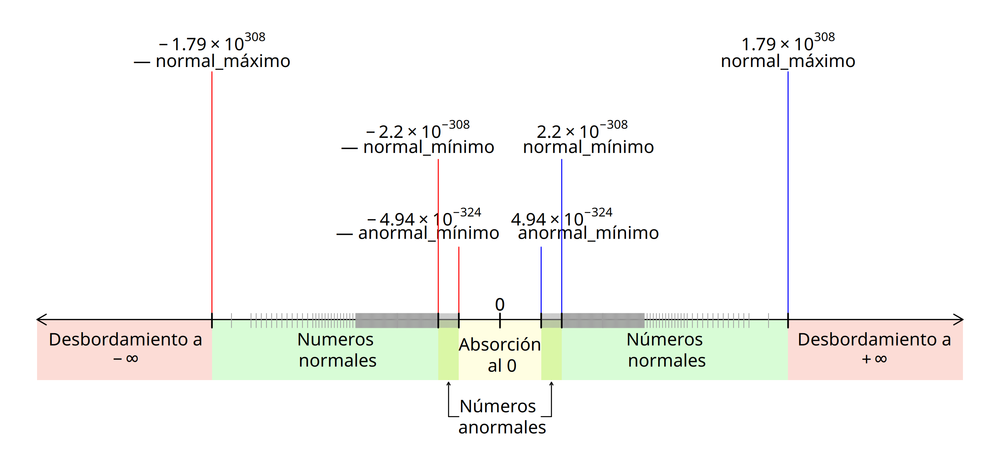

a <- 0.3
print(a)
options(digits = 22)
print(a)
b <- 0.1 + 0.2
print(b)
a == b
all.equal(a,b)
options(digits = 7)
print(a); print(b)
is.double(1)
all(double(3) == 0)
## La conversión recortará los espacios en blanco;
## las cadenas de texto no numéricas devolverán NA
## y una advertencia
as.double(c("-.1"," 2.7 ","B"))
as.double(c("infinity", "NaN", "NA", "Inf","3.14159","+0","-0"))
## Los valores numéricos algunas veces serán convertidos
## accidentalmente a factores. Convertirlos de vuelta a
## un vector numérico podría ser más complicado de lo que esperas.
f <- factor(5:10)
as.double(f) # no es lo que esperas y probablemente
## no es lo que desees hacer.
## Lo que realmente esperas y deseas hacer:
as.double(as.character(f))
## lo mismo, pero considerablemente más
## eficiente para vectores largos:
as.double(levels(f))[f]
## Para verificar las funciones de la clase "numeric"
methods(class = "numeric") # all.equal as.data.frame as.Date
# as.POSIXct as.POSIXlt as.raster
# coerce Ops Funciones para crear o verificar vectores de tipo doble
Documentación de R 4.3.0
1 Descripción
La función double() creará un vector de tipo doble ("double") que podrá almacenar un subconjunto amplio de los números reales () con una exactitud máxima de hasta quince dígitos. Para conocer más sobre la precisión y exactitud de los números reales en R, puedes consultar más adelante la sección .
La función as.double() intentará convertir en un vector de tipo doble a cualquier clase de objeto. Por su parte, la función is.double() verificará si un objeto es de tipo doble.
La función single() creará un vector de tipo doble para almacenamiento de números reales, pero añadirá un atributo ("Csingle") que permitirá identificar al vector con el tipo de datos sencillo a nivel interno del código de R.
El tipo de datos sencillo podrá almacenar un subconjunto menos amplio de los números reales (). Para conocer más sobre este tema, puedes consultar más adelante la sección .
La función as.single() intentará convertir cualquier objeto en un vector de tipo doble, además, añadirá un atributo ("Csingle") que permitirá identificar al vector como uno de tipo sencillo a nivel interno del código de R.
La función numeric() es idéntica a la función double() y la función as.numeric() es idéntica a as.double(). La función is.numeric() comprobará si un vector es de tipo doble ("double") o de tipo entero ("integer").
Estas funciones existen como una denominación más práctica para trabajar con números reales en R. Para conocer más sobre este tema, puedes consultar más adelante la sección .
La función c() creará un vector doble si se utiliza para combinar valores reales que estén separados por comas.
2 Sintaxis o forma de uso
double(length = 0)
as.double(x, ...)
is.double(x)
single(length = 0)
as.single(x, ...)
numeric(length = 0)
as.numeric(x, ...)
is.numeric(x)
c(...)3 Argumentos
| Nombre del argumento | Valor esperado | Propósito |
|---|---|---|
longitud |
Un valor entero mayor o igual a cero | Determina la longitud deseada del vector, es decir, el número de elementos que almacenará. El argumento de longitud aceptará números enteros no negativos. Los valores reales (es decir, continuos) serán convertidos a enteros y la aportación de más de un valor devolverá un mensaje de error. |
x= |
Un objeto | Un objeto para ser coaccionado o verificado como vector de tipo doble. |
... |
Otros argumentos | Otros argumentos que serán pasados desde o hacia otras funciones. |
4 Detalles
4.1 Definición de los vectores dobles
Los vectores de tipo doble son estructuras atómicas de R destinadas al almacenamiento exclusivo de números reales en celdas contiguas, así como diseñadas para la realización de operaciones individuales o en paralelo con los elementos de estas celdas (R Development Core Team 2024, 3).
Los vectores dobles son el único tipo de objeto en R que permite guardar, mostrar y realizar operaciones matemáticas con un subconjunto amplio de los números reales del sistema de numeración decimal, en el intervalo que va de a , aproximadamente.
Un vector es una estructura que permite almacenar algún tipo de datos en celdas indizadas o numeradas y cuyos elementos individuales, a veces llamados escalares, son accesibles mediante operaciones de indización con números enteros (Abelson, Sussman, y Sussman 1996, 534). Por su parte, un tipo de datos es una categorización de un conjunto de valores que comparten propiedades similares, y de un conjunto de operaciones —computacionales y matemáticas— definidas para esos valores (Wirth 1976, 4).
En R, los vectores son la base para construir estructuras más complejas como matrices, arreglos, listas o marcos de datos, las cuales pueden almacenar seis tipos de datos fundamentales o atómicos: lógico ("logical"), entero ("integer"), complejo ("complex"), carácter ("character"), crudo ("raw") y doble ("double").
En particular, el tipo de datos doble consiste en un formato de almacenamiento y representación de números reales basado en la aritmética binaria de punto flotante.
La aritmética binaria de punto flotante es el sistema interno más extendido entre las computadoras actuales para aproximarse a la aritmética decimal de los números reales. Básicamente, es un formato numérico similar a la notación científica que permite realizar operaciones matemáticas con los valores almacenados.
La denominación «doble» para este tipo de datos es resultado de la comparación del tamaño estándar de agrupación de memoria destinado al almacenamiento de un sólo número real, de bits, con respecto al tamaño estándar del formato «sencillo», de bits.
Debido a las características del formato binario de punto flotante, el tipo de datos doble almacenará y representará a los números reales con una precisión y exactitud limitadas.
En general, la precisión de una cantidad se refiere al número de cifras significativas u órdenes de magnitud (centenas, decenas, unidades, décimas, centésimas, etc.) que es posible almacenar o representar en pantalla. En cambio, la exactitud es la ausencia o presencia mínima del error de redondeo en el resultado de las operaciones aritméticas de la computadora (Muller et al. 2018, 100).
Con respecto a la precisión, R desplegará de manera prederminada a los números reales con un máximo de siete dígitos, aunque todo valor continuo podrá almacenarse con hasta veintidós cifras significativas.
Al igual que otros lenguajes de programación, R podrá desplegar un máximo de veintidós cifras significativas para las operaciones matemáticas con valores de tipo doble. Para mostrar más cifras que las representadas originalmente, puedes modificar el número de dígitos desplegados con el argumento digits= de la función options().
En cuanto a la exactitud, el tipo de datos doble sólo podrá almacenar un máximo de quince dígitos sin error de redondeo, es decir, de forma exacta. A partir del dígito dieciséis, las cifras almacenadas tendrán un error de redondeo cada vez mayor conforme aumente el grado de precisión desplegado.
Una precisión mayor a veintidós dígitos no suele tener ningún significado práctico, no obstante, esta precisión existe a nivel interno para garantizar la exactitud de las operaciones matemáticas visibles. Si deseas conocer cómo está almacenado un número en la memoria más allá de los veintidós dígitos desplegables, puedes consultar las opciones de la función formatC().
Aunque es muy conveniente no perder de vista las limitaciones en precisión y exactitud de los valores dobles, la gran mayoría de aplicaciones estadísticas y científicas no suele demandar una precisión mucho mayor a la ofrecida por el formato doble de punto flotante (Muller et al. 2018, 4).
Para conocer más información sobre cómo ampliar la exactitud de las operaciones matemáticas por encima de los límites de los valores dobles, puedes consultar más adelante la sección . Igualmente, si deseas profundizar sobre las características de la aritmética de punto flotante, puedes consultar más adelante la sección .
4.2 Funciones para crear vectores dobles
Las funciones básicas para crear vectores dobles son double(), numeric() y c(). Los vectores dobles podrán almacenar números reales en cada elemento con una precisión de hasta quince cifras significativas exactas en el intervalo aproximado de . A continuación se describen sus características más importantes.
double() creará un vector doble con el número de elementos especificado en el argumento de longitud, length=. Al momento de su creación, cada elemento del vector será igual a cero (0). Enseguida, se podrán asignar valores reales positivos o negativos, así como valores no disponibles (NA o NA_real_), al vector creado.
La función numeric() es idéntica, en propósito e internamente, a la función double(). Existe como una denominación más práctica para referirse a la función de creación de vectores que trabajen con números reales.
c() creará un vector doble si es utilizada para combinar valores reales que estén separados por comas. Por ejemplo, como en: c(1.414214, 2.718282, 3.141593). La combinación de elementos con valores reales creará un vector de tipo doble. Si deseas obtener más información sobre cómo combinar elementos para crear vectores de un tipo determinado, puedes consultar la página de ayuda de la función c().
En particular, la función c() es de tipo primitivo, por lo que su código fuente está implementado de manera interna y no será visible directamente por la usuaria.
single() es una función alternativa para crear vectores dobles. Esta función creará un vector de tipo doble para almacenamiento y representación de números reales, pero añadirá el atributo "Csingle" al vector creado, lo que permitirá identificar a este objeto como uno de tipo sencillo a nivel interno del código de R.
Los vectores sencillos pueden almacenar números reales con una precisión de hasta siete cifras significativas exactas en el intervalo aproximado de , es decir, con una precisión y exactitud menor a la de los vectores dobles. Ya que todos los números reales son almacenados con el tipo de datos doble ("double"), R no cuenta en realidad con el tipo de datos sencillo, también conocido como flotante ("float") en otros lenguajes de programación.
Para más información sobre la utilización de las funciones para crear vectores dobles, puedes ver más adelante la sección .
4.3 Funciones para convertir objetos en vectores dobles
as.double() intentará convertir al objeto referido en el argumento x= en un vector de tipo doble y, de tener éxito, devolverá al objeto como un vector de este tipo ("double"). Si la coacción no ha sido exitosa, el resultado será un mensaje de error o un valor no disponible (NA) por cada elemento no coaccionado.
La función as.numeric() es idéntica, en propósito e internamente, a la función as.double(). Existe como una denominación más general y práctica para referirse a la función de conversión a objetos que trabajen con números reales.
Las funciones as.double() y as.numeric() son de tipo primitivo, por lo que su código fuente está implementado de manera interna y no será visible directamente para la usuaria.
La función as.single() intentará convertir cualquier objeto en un vector de tipo doble. Esta función añadirá el atributo "Csingle" al objeto, lo que permitirá identificar al vector como uno de tipo sencillo a nivel interno del código de R.
En realidad, el atributo "Csingle" se utilizará solamente en la interfaz interna de R con los lenguajes de programación C y Fortran para indicar que los objetos creados con las funciones single() y as.single() deberán ser interpretados como vectores de precisión sencilla, aunque a nivel externo funcionarán como vectores dobles.
4.4 Funciones para verificar si los objetos son vectores dobles
Por su parte, la función is.double() se utilizará para verificar si un vector o matriz es de tipo doble ("double"). En particular, is.double() es una función primitiva, por lo que su código fuente está implementado de manera interna y no será visible directamente por la usuaria.
La función is.numeric() comprobará si un vector es de tipo doble ("double") o de tipo entero ("integer"). Por lo tanto, no es exclusiva para los vectores dobles sino para los objetos de modo numérico.
Para acceder a más información sobre la utilización de estas funciones, puedes consultar más adelante la sección .
4.5 El formato de almacenamiento de los vectores dobles
En R, los valores de los vectores dobles son almacenados en el formato binario de punto flotante. Este formato interno hace posible la representación en pantalla de un conjunto de números continuos —los reales— con los elementos de un conjunto de números discretos —los dígitos de la máquina o bits— (Muller et al. 2018, 3).
El almacenamiento binario de valores continuos a partir de un número de bits discreto implica que sólo algunos números reales podrán ser almacenados de forma exacta y que, por lo tanto, habrá usualmente una pequeña diferencia entre el valor almacenado y el valor representado en pantalla (Borgwardt 2010).
La diferencia entre el valor almacenado de algunas cantidades y su valor representado es uno de los rasgos fundamentales, en general, de la aritmética de punto flotante (Goldberg 1991, 6).
Por lo general, el tipo de datos doble de R está implementado de acuerdo al estándar IEEE-754-2019 del Instituto de Ingenieros Eléctricos y Electrónicos de Estados Unidos (IEEE por sus siglas en inglés), equivalente al estándar internacional ISO/IEC-60559:2020 de la Comisión Internacional de Electrotecnia de la Organización Internacional para la Estandarización (ISO, por sus siglas en inglés) (ISO/IEC 2020).
De acuerdo con este estándar, los valores de precisión doble usarán dígitos binarios (ocho bytes) para almacenar internamente un número real, mientras que los valores de precisión sencilla utilizarán dígitos binarios (cuatro bytes).
Los bits de almacenamiento doble se distribuirán de la siguiente manera: un dígito corresponderá al signo del significante, dígitos almacenarán al significante, y once dígitos corresponderán al exponente de la base. Puedes consultar más adelante la sección Sección 4.8 para conocer más detalles sobre estos conceptos.
En específico, los bits de almacenamiento binario permtirán almacenar números reales con una exactitud de hasta quince dígitos en formato decimal, y hasta veintidós dígitos de manera aproximada.
Esto significa que, después del dígito quince la precisión de una cifra almacenada aumentará sólo con una reducción o costo en su exactitud. Para más información, puedes consultar a continuación la sección Sección 4.6.
En la actualidad, el estándar ISO/IEC-60559:2020 utiliza la denominación binaria64 (binary64) para referirse a la precisión doble, y binaria32 (binary32) para referirse la precisión sencilla.
No obstante, a nivel de los lenguajes de programación, la precisión doble es todavía conocida ampliamente como el tipo de datos "double" o "numeric", mientras que la precisión sencilla se suele denominar como el tipo de datos "single" o "float". Si deseas conocer más información sobre este tema puedes consultar más adelante la sección .
El estándar ISO/IEC-60559:2020 también contempla el almacenamiento y representación de valores especiales para casos numéricos límite, como los infinitos () y las operaciones matemáticas no definidas (). Los infinitos son representados con la abreviatura -Infpara el infinito negativo y la abreviatura +Inf para el infinito positivo, mientras que las operaciones no definidas son representadas con el acrónimo NaN. Además, se definen como válidos los valores negativo (-0) y positivo (+0) de cero, los cuales son equivalentes a cero (0).
En las computadoras modernas, la aritmética de punto flotante está implementada directamente desde la maquinaria del equipo, en el coprocesador matemático o Unidad de Punto Flotante (FPU, por sus siglas en inglés).
Por lo tanto, en última instancia, el manejo de los números de precisión doble dependerá de las características del procesador (CPU, por sus siglas en inglés), el coprocesador y el compilador de la computadora donde se instale R. Si la maquinaria de equipo se adhiere al estándar ISO/IEC-60559:2020, entonces R también lo hará.
Para conocer más detalles sobre los límites y el tipo del almacenamiento numérico en tu plataforma de sistema puedes ver la página de ayuda sobre las características numéricas del equipo.
4.6 La representación de los valores dobles
Las cifras en formato doble aparecerán en pantalla en notación fija del sistema de numeración decimal, es decir, como números continuos. Por ejemplo, las constantes matemáticas , y podrán invocarse con las expresiones las expresiones sqrt(2), exp(1), o pi y aparecerán en la consola como: 1.414214, 2.718282 y 3.141593, respectivamente.
De manera predeterminada, R desplegará hasta siete dígitos para cualquier valor numérico. Si la cifra incluye fracciones decimales, entonces el punto decimal no será contado como uno de los dígitos. Cuando la usuaria desee desplegar más dígitos en la pantalla, deberá especificarlo con el argumento digits= de la función options().
Debido a los límites en el tamaño de la agrupación de memoria para el tipo doble, el número máximo de dígitos desplegables será de veintidós, de los cuales sólo los primeros quince podrán representar siempre valores exactos. En consecuencia, a partir del dígito dieciséis algunos valores sólo podrán representarse de forma aproximada.
En América Latina y Estados Unidos el símbolo de separación de enteros y fracciones suele ser el punto decimal ( . ), mientras que en España y algunos países de Europa se utiliza la coma ( , ).
Adviértase, sin embargo, que R utilizará siempre el punto decimal para desplegar valores reales, independientemente de la configuración regional de la plataforma de sistema en la que se encuentre instalado.
4.6.1 La notación científica E
De manera relevante, los límites de la representación de los números reales en R ( ) comprenden órdenes de magnitud más precisos que el despliegue de valores con quince cifras significativas exactas y veintidós aproximadas.
Por ello, cuando un número tenga una precisión mayor a veintidós dígitos, pero se encuentre dentro de los límites numéricos del almacenamiento doble, R desplegará en pantalla una forma abreviada de la notación científica. A este formato de despligue se le denomina notación científica E.
La notación científica E es una forma de representar números grandes o pequeños de forma compacta. Los números serán mostrados en el formato Me±N, donde M representa un número decimal y la letra e representa al número que será elevado a la potencia N.
La notación científica E es útil porque las potencias con superíndices (de la forma ) no se pueden mostrar en la consola ni en el código fuente de R. Por ejemplo, el número se puede desplegar en la consola como 100000 en notación decimal fija o como 1.0e5 en notación científica E, pero no como su equivalente en notación científica convencional: .
Así, la notación científica E posibilita la representación de números con más de quince cifras significativas de forma compacta, siempre que se encuentren dentro de los límites del almacenamiento doble.
4.6.2 La representación de valores matemáticos y estadísticos especiales
Cuando los valores sean demasiado grandes o demasiado pequeños para ser representados adecuadamente, incluso con la notación científica E, los valores se desbordarán a alguno de los infinitos (±Inf) o serán absorbidos al cero (0) por la derecha (+0) o por la izquierda (-0).
En el primer caso mencionado, los vectores dobles representarán al infinito positivo () con los literales +Inf o Inf y al infinito negativo () con los caracteres -Inf. En el segundo, el valor positivo o negativo asociado al cero () será resultado de operaciones cuyo limite matemático sea cero. Cabe destacar que los valores -0 y +0 son completamente equivalentes a 0.
Si deseas trabajar con números que tengan más de quince cifras significativas exactas en notación decimal fija (es decir, sin hacer uso de la notación científica E) o, incluso, realizar cálculos con tipos exactos, es recomendable el uso de paquetes especializados. Por ejemplo, el paquete {Rmpfr} permite realizar operaciones aritméticas con números de precisión decimal arbitraria y sin error de redondeo.
Con todo, pocos campos de la ciencia necesitan precisiones mayores a este umbral, por lo que un gran número de aplicaciones estadísticas podrán realizarse adecuadamente con la precisión doble (Muller et al. 2018, 3).
El concepto estadístico de valor perdido tiene su expresión correspondiente en R por medio de los valores no disponibles.1 Para cada tipo de vector atómico, salvo para los vectores crudos ("raw"), existe un tipo propio de valor no disponible, representado en pantalla por los caracteres NA (del inglés Not Available). Así, al tipo doble le corresponderá, a nivel interno, el valor no disponible NA_real_.
Si deseas asegurarte de que los vectores dobles reciban solamente valores no disponibles de tipo doble, puedes utilizar directamente el literal NA_real_ (en vez de la forma más simple NA) en las operaciones de asignación de la consola o del código fuente. Para mayor información puedes consultar más adelante la sección Ejemplos, así como la página de ayuda de los valores no disponibles.
Por otro lado, si se realizan operaciones matemáticas no definidas —como la división de cero entre cero o la resta de infinitos— R desplegará un valor doble especial. Este valor será desplegado en la pantalla como NaN, cuyos caracteres significan Valor no Numérico (del inglés Not a Number) pero que puede interpretarse mejor como el concepto matemático de resultado o conjunto inexistente: .
Al igual que en el lenguaje C, en R, la carga de bits de un valor no númerico NaN no aportará ninguna información de diagnóstico sobre la operación que generó este valor. Por lo tanto, esto tendrá que deducirse a partir de la depuración del código fuente. Si deseas acceder a más información sobre los Valores no Numéricos, puedes consultar la página de ayuda sobre los valores NaN.
4.7 Características de los vectores dobles como objetos
Los vectores dobles ("double"), al igual que el resto de vectores atómicos, sólo podrán contener elementos del mismo tipo, en este caso, números reales. No obstante, esto también incluye el almacenamiento de valores enteros en forma exacta, incluso más allá del rango de almacenamiento del tipo entero ("integer").
R cuenta con dos denominaciones para referirse a los vectores que almacenan números reales: "double" y "numeric", lo que responde a una inercia histórica.2 Para evitar confusiones, es conveniente distinguir entre el tipo y el modo de almacenamiento, así como entre las clases de objetos que existen en R.
El tipo de almacenamiento define al formato de los datos que puede contener un vector atómico. Especialmente, R cuenta con tres tipos de almacenamiento numérico: el tipo entero, el tipo doble y el tipo complejo.
Por su parte, el modo de almacenamiento también define al tipo de datos que contendrá un vector, pero agrupa a algunos tipos de almacenamiento basado en características similares.
Mientras que el tipo de almacenamiento es una clasificación excluyente, el modo de almacenamiento es una clasificación genérica. Ello permite agrupar a algunos tipos de almacenamiento con características similares en una sola categoría.
Por ejemplo, los vectores dobles y los enteros comparten en común el modo de almacenamiento numérico ("numeric"), de forma que será posible identificarlos como objetos similares para algunas tareas en común.
Además de poseer un tipo y un modo de almacenamiento, los vectores son esencialmente entidades abstractas que poseen atributos, es decir, son objetos del lenguaje. Uno de los atributos más importantes de cualquier objeto es su clase, la cual determina los métodos y funciones que se le podrán aplicar.
En este sentido, todos los tipos numéricos de R poseen una clase propia que define las operaciones matemáticas y estadísticas que les corresponden. Así, el tipo entero ("integer") pertenece a la clase entero ("integer"), el tipo doble ("double") pertenece a la clase numérico ("numeric"), y el tipo complejo ("complex") pertenece a la clase complejo ("complex").
Los objetos de la clase entero admiten las operaciones aritméticas y estadísticas básicas. Los objetos de la clase numérico admiten todas las operaciones aritméticas y estadísticas aplicables a la clase entero, y, además, permiten todas las operaciones aritméticas y estadísticas para los números reales. Finalmente, los objetos de la la clase complejo admiten las operaciones que se pueden realizar con la clase entero y numérico, pero también las operaciones aritméticas propias de los números complejos.
Si se realiza una operación en común entre objetos numéricos de diferente clase, R coaccionará a los objetos involucrados a la clase que admita más operaciones, y promoverá el tipo de almacenamiento del vector conforme a la clase correspondiente.
Es decir, si se realiza una operación matemática entre un vector entero y uno doble, el resultado será un vector de tipo doble. Y si se realiza una operación entre vectores enteros, dobles y complejos, el resultado será un vector de tipo complejo.
4.8 Los tipos de datos para los números reales
Los tipos de datos se definen, por un lado, por su formato de almacenamiento y, por otro, por el conjunto de operaciones y funciones que son válidas exclusivamente para ellos. En particular, los tipos de datos reales son categorías numéricas de los lenguajes de programación para representar las propiedades matemáticas de los números reales. Algunos nombres de estos tipos son, por ejemplo: "float", "double" o "long double".
Los números reales, como conceptos matemáticos, poseen propiedades fundamentales que un ordenador debería ser capaz de reflejar. Por ello, si se consideran sus propiedades más importantes será más fácil comprender las características y limitaciones de los tipos de datos utilizados para su representación.
4.8.1 Propiedades de los números reales
En términos simples, los números reales son aquellos que pueden representarse con la marca de separación de enteros y fracciones decimales, ya sea que esta marca se trate del punto () o la coma () y pueden ser números tanto positivos como negativos incluyendo al cero.
En términos matemáticos, los números reales se refieren al conjunto que comprende a los subconjuntos de los números racionales , definidos como la razón de dos enteros donde , y a los irracionales, los cuales no pueden ser representados exactamente por la razón de dos números enteros (djao (24) 2013).
En particular, los números reales poseen tres propiedades muy importantes: i) su dominio es infinito, por lo que los valores se extienden indefinidamente hacia ambos lados de la recta numérica; ii) su densidad es continua, lo que significa que entre un número real y otro número real siempre existirá otro número real , sin importar cuán cercanos se encuentren y (Tanenbaum y Austin 2013, 683); y iii) algunos valores reales pueden tener una precisión infinita, por lo que sólo podrán ser representados exactamente por fracciones o símbolos.
Estas propiedades implican que los números reales son incontables. Ya que las computadoras sólo almacenan una cantidad de información finita, los formatos para números reales sólo podrán almacenar un rango y número limitado de éstos de forma aproximada.
4.8.2 Los diferentes formatos de almacenamiento de los números reales
Los formatos numéricos son abstracciones que prescriben las reglas de implementación de los sistemas de numeración así como los procedimientos aritméticos en los ordenadores (ISO/IEC 2020, 16). A su vez, a nivel de los lenguajes de programación, los tipos de datos son las representaciones externas de los formatos numéricos.
Existen diferentes formatos para trabajar con números reales, algunos anteriores a la generalización de la aritmética de punto flotante y otros posteriores a esta. Entre los primeros se encuentra la aritmética de punto fijo, que destina un número predeterminado de dígitos a las partes entera y fraccionaria de una cantidad, y es utilizada en entornos en donde una precisión limitada y regular resulta más útil, como en el procesamiento digital de señales (Yates 2020, 3) o las operaciones comerciales.
Otras alternativas tradicionales para trabajar con números reales son el cálculo simbólico, el cálculo de fracciones, la aritmética de intervalos o el formato decimal codificado en binario, ampliamente extendido en las terminales de pago (Evans 2023, 26).
En los últimos años, se han implementado con éxito “nuevos” formatos numéricos (bfloat, FP16, FP8) que reducen las especificaciones del formato de punto flotante con el propósito de mejorar el rendimiento computacional en el ámbito de la inteligencia artificial (Rouhani et al. 2023). Otras propuestas han intentado plantear un formato diferente que pueda suceder al estándar IEEE-754. Por ejemplo, el formato posit, cuyo objetivo es incrementar la exactitud de los cálculos científicos de manera más eficiente que las alternativas de punto flotante (New Generation Arithmetic 2020).
Con todo, el formato binario de punto flotante avalado por el estándar IEEE-754 es todavía el preferido por los fabricantes de maquinaria computacional (Narasimhan 2022), lo que determina en buena medida la especificación de los tipos de datos de los lenguajes de programación. Por ello, a continuación se exponen las características técnicas del estándar IEEE-754.
4.8.3 El formato de punto flotante de acuerdo al estándar IEEE-754
El estándar IEEE-754 (equivalente al estándar ISO/IEC-60559) codifica al formato de punto o coma flotante en la mayoría de las computadoras del mundo. Dicho estándar fue aprobado en 1985 por el Instituto de Ingenieros Eléctricos y Electrónicos (IEEE) de Estados Unidos con el propósito de aumentar la portabilidad de los programas matemáticos entre computadoras con diferente arquitectura (Hough 2019, 110).
En esencia, el estándar IEEE-754 define al formato de punto flotante como una estructura de datos con una distribución específica de campos que constituyen la representación de un número. Además, señala los procedimientos para que las operaciones computacionales devuelvan los resultados matemáticos esperados. De manera previsora, el formato preestablece valores especiales para casos numéricos límite, tales como los infinitos (), los valores anormales (próximos al cero), y las operaciones matemáticas cuyo resultado no está definido ().
A su vez, las estructuras y operaciones del estándar son implementadas en las diferentes capas de un sistema computacional —desde la maquinaria del equipo hasta las bibliotecas de los lenguajes de programación— y en conjunto constituyen una aritmética o entorno de punto flotante (Oracle 2017, 1).
De este modo, el formato de punto flotante consiste en una representación de la aritmética de los números reales basada en un formato de almacenamiento similar a la notación científica. Su principal propósito es ofrecer procedimientos confiables para la realización de cálculos matemáticos en diversos campos de la ciencia (Muller et al. 2018, 4). No obstante, la reducción de un número infinito de valores reales a un número finito de bits requiere de una representación numérica basada en el redondeo de cantidades superiores a cierto orden de magnitud (Goldberg 1991, 6).
Al operar con magnitudes cercanas a los límites del formato, el redondeo puede introducir un error, por lo general mínimo, entre el valor real y el aproximado. Este error de redondeo constituye una característica inherente a la aritmética de punto flotante (Goldberg 1991, 7). Por ello, es crucial estar conscientes de los límites numéricos preestablecidos para los distintos subformatos del estándar IEEE-754. Para una discusión más detallada sobre este tema, véase más adelante la sección XXXX.
Desde su establecimiento en 1985, el estándar ha experimentado varias revisiones significativas. La primera, en 2008, introdujo la base decimal junto a la tradicional base binaria y reorientó el enfoque de las especificaciones desde la maquinaria computacional hacia las aplicaciones de sistema, preservando la compatibilidad con la versión de 1985 (Hough 2019, 111). Una segunda revisión oficial en 2019 actualizó los procedimientos de las operaciones aritméticas para asegurar su exactitud, manteniendo la compatibilidad con la actualización de 2008. La siguiente revisión del estándar está prevista para 2029 (Hough 2019, 112)
4.8.3.1 Los parámetros del estándar IEEE-754
El estándar IEEE-754 define dos parámetros que determinan el nombre y las características fundamentales de los formatos de punto flotante. Estos son: i) la base numérica en la que serán almacenados los números reales, y ii) el tamaño de agrupación de memoria que indicará el número fijo de dígitos destinados al almacenamiento de una cifra real completa. Tan sólo estos parámetros pueden definir por completo a los diferentes subformatos de punto flotante existentes (Muller et al. 2018, 63).
En primer término, el estándar IEEE-754 acepta el uso de dos bases numéricas para almacenar números reales: la binaria y la decimal ()). Aunque los cálculos en el sistema decimal () sean más familiares para las personas, a nivel interno, los tipos de datos basados en el formato de punto flotante están basados, por lo regular, en el sistema de numeración binario ().
Independientemente de la base interna, la representación externa de los tipos de datos se hará, por lo general, en el sistema decimal. Para más información, véase la sección Sección 4.6. Dado el uso generalizado a nivel interno del formato binario, esta sección sólo se enfocará en describir las características de los formatos binarios de punto flotante, aunque el funcionamiento de las bases decimales puede seguirse a partir de de la comprensión de las bases binarias.
Con respecto al tamaño de agrupación de memoria , el estándar IEEE-754 define el uso de los valores convencionales de , , o dígitos binarios —o sea, de , , o bytes— para el almacenamiento de una cifra real completa.
El número de dígitos de nombra a los distintos subformatos de punto flotante. En la actualidad, el estándar IEEE-754 utiliza las denominaciones binaria16 (tipo de datos "half") para referirse a la precisión media, binaria32 (tipo de datos "single" o "float") para referirse a la precisión sencilla, binaria64 (tipo de datos "double" o "numeric") para referirse la precisión doble y binaria128 (tipo de datos "long double") para referirse a la precisión doble extendida.
Dependiendo de la extensión de , —es decir, del tipo de datos— sus dígitos se distribuirán entre tres parámetros con asignaciones predefinidas:
- Un valor que representa al signo () del número real, el cual se representa con un dígito que puede adoptar los valores o para indicar un valor positivo o negativo, respectivamente.
- Un valor que representa al significante con una precisión distribuída en , , o dígitos. El significante se compone de un dígito binario antes de la marca de separación de fracciones —i.e. el punto o la coma— y dígitos binarios después de ésta y deberá expresarse en forma normalizada.3 Dado que el primer dígito siempre será igual a 1, sólo se almacena con dígitos.
- Un exponente entero distribuído en , , o dígitos binarios dentro del rango predefinido por los valores de y .
De esta manera, un número de punto flotante en la base es uno para el cual existe al menos una representación exacta en función de la distribución de -dígitos entre los parámetros , y de la forma:
La Ecuación 1 tiene varias implicaciones. La primera es que el número total de valores de punto flotante que un subformato puede representar es resultado de las combinaciones existentes entre el número de valores que cada dígito puede adoptar de acuerdo a la base () y el número de dígitos totales del formato ().
De este modo, la precisión media representará valores de punto flotante, la precisión simple tendra valores; a su vez, la precisión doble albergará valores y, finalmente, la precisión doble extendida contendrá 2^128 valores posibles. En consecuencia, a diferencia de los números reales, el dominio de los números de punto flotante es finito.
La primera consiste en que la disponibilidad de los números de punto flotante estará organizada en «ventanas» definidas por el resultado de elevar la base a los valores definidos entre y (Evans 2023, 20). Así, la primer ventana de valores irá de a , la siguiente de , y así sucesivamente hasta llegar al último rango: . Por su parte, el número de ventanas es simplemente resultado de elevar la base al número de dígitos disponibles para el exponente ().
De igual modo, dada una precisión para , en cada ventana habrá un número de valores disponibles. Ya que en cada ventana se deberán distribuir valores entre elementos, el salto entre los números de punto flotante será igual a de ventana a ventana. Por ejemplo, el salto para los valores de tipo "double", donde y , será de para la ventana . Esto significa que los saltos entre los números de punto flotante en el formato doble se duplicarán por cada ventana conforme los valores se aproximen a la última ventana: (Evans 2023, 20).
En términos de las propiedades de los reales, se puede afirmar que entre un número de punto flotante y otro número de punto floante no siempre existirá otro número de punto flotante . En consecuencia, a diferencia de los reales, la densidad de los números de punto flotante es discreta y será menor conforme las ventanas se alejen del cero.
En primer término, el signo ocupará un sólo dígito para cualquier precisión (sencilla, doble, cuádruple), y adoptará el valor cero para los números positivos o el valor uno para almacenar a los negativos.
Por su parte, el significante estará compuesto por dígitos. Esto responde a que el significante siempre es almacenado de forma normalizada (), lo cual implica que el primer dígito siempre será igual a uno. Si el primer dígito siempre es el mismo, entonces no habrá necesidad de considerarlo y el significante sólo estará compuesto por la parte fraccionaria de cualquier número de punto flotante (Cook 2009). De este modo, las precisiones efectivas del significante correspondientes a los formatos sencillo (binario32), doble (binario64) y cuádruple (binario128) serán de , o bits.
El tercer parámetro fundamental de un número de punto flotante es el exponente , que solamente podrá adoptar valores enteros. Dependiendo de la precisión utilizada, el exponente podrá tener un tamaño de agrupación ( ) de , o dígitos binarios, correspondientes a los formatos de precisión sencillla, doble y cuádruple, respectivamente. En el primer caso, la precisión sencilla podrá alojar un rango de () valores en el exponente, mientras que la precisión doble almacenará () y la cuádruple alcanzará los () valores.
El exponente se almacena con un sesgo . Es decir, aunque los valores del exponente se representan como positivos o negativos para la usuaria, en realidad son almacenados siempre con un valor positivo. Para conocer el valor con el cual es almacenado el exponente, deberá sumarse el sesgo al valor representado de . El sesgo es equivalente al valor máximo representable del exponente (), que a su vez es igual al resultado de restar una unidad al resultado de elevar la base () al valor del tamaño de agrupación del exponente ( ) menos uno:
De acuerdo con la fórmula anterior, el sesgo para la precisión sencilla será igual a , mientras que para la precisión doble será igual a y, finalmente, para la precisión cuádruple adoptará el valor de . Por otro lado, el valor mínimo representable del exponente () se define como la resta del valor del exponente máximo al valor uno: . De acuerdo con esta fórmula, el valor mínimo del exponente para la precisión sencilla será igual a , mientras que para la precisión doble será igual a y, finalmente, para la precisión cuádruple adoptará el valor de .
En la Tabla 2 se puede observar un resumen de la especificación de precisiones y exponentes correspondiente a cada formato.
| Parámetro | binaria32 | binaria64 | binaria128 |
|---|---|---|---|
| Valor de | 2 | 2 | 2 |
| Número de dígitos de | |||
| Número de dígitos de () | |||
| Precisión definida de ( ) | |||
| Número de dígitos efectivos de () | |||
| Número de dígitos de () |
Si bien los cálculos científicos no necesitan de una precisión ilimitada, a menudo involucran la necesidad de trabajar simultáneamente con magnitudes muy grandes y muy pequeñas. Al destinar dígitos a la representación de casos con órdenes de magnitud muy distantes, los resultados corren el riesgo de ser imprecisos (Evans 2023, 18-19). Para resolver este dilema, el estándar ISO/IEC 60559-2020 prevé tres tipos de números en formato de punto flotante: los normales, los anormales y los casos especiales.
Los números normales podrán representarse exactamente dentro de los límites del almacenamiento numérico definidos por el estándar (por ejemplo: ) y serán almacenados internamente con un significante con un dígito igual a uno antes del punto (). Por su parte, los números anormales son aquellos con una magnitud menor a la del número normal más pequeño posible, conocido como el valor épsilon de máquina (), y poseen un significante con un dígito igual a cero antes del punto (). Finalmente, los casos especiales se refieren a la representación de las operaciones matemáticas no definidas (NaN), así como al cero (0) y los infinitos (±Inf).
Los números anormales, al ser muy cercanos al cero, impiden la absorción abrupta del resultado de las operaciones aritméticas que involucren cifras con órdenes de magnitud muy distantes. Al considerar la existencia de números anormales, la aritmética de punto flotante se asegura de que la pérdida de información entre los pasos intermedios de los cálculos, en especial de las sumas y restas, sea menor. Esta posibilidad es muy importante para la confiabilidad de las aplicaciones científicas de los ordenadores.
En consecuencia, el número normal más grande estará especificado por la formula , mientras que el normal más pequeño será resultado de la expresión . En su forma normal, el significante siempre será menor a la magnitud de la base , pero mayor o igual a uno ( ): . En la forma anormal, el significante podrá ser mayor a cero y menor a uno ( ): .

Dada la definición de números normales y anormales, se deduce que un número de punto flotante nunca podrá adoptar el valor interno igual a cero. Por ello, el estándar utilizará un valor especial de manera equivalente. Cuando y , los bits serán interpretados como el número cero. Cuando y , los bits serán interpretados como los números anormales.
El exponente especial reservado arriba de será utilizado para representar al infinito y a los valores no determinados. Si y , entonces los bits serán interpretados como infinito. Pero si + 1 y f es diferente de cero, los bits son interpretados como valores numéricos no definidos (NaN).
En última instancia, un formato de representación de punto flotante realizará un sacrificio entre la cantidad de números representables y el nivel de precisión que estos puedan alcanzar.
El resto de los dígitos codifica la precisión del significante (). La precisión del significante depende de la definición del formato. La precisión media cuanta con 11 dígitos, la sencilla con 24, la doble con 53 y la cuádruple con 113.
| Parámetro | Precisión media | Precisión sencilla | Precisión doble | Precisión cuádruple |
|---|---|---|---|---|
| Número de dígitos del exponente | 5 | 8 | 11 | 15 |
| Valor inicial del exponente | 15 | 127 | 1023 | 16383 |
| Valor mínimo | ||||
5 Valor devuelto
Cualquier número tecleado sin comillas rectas ( "" o '' ) en la consola de R será devuelto como un valor de tipo doble por el lenguaje. Es decir, R podrá identificar literales o constantes numéricas en el código fuente y las devolverá como valores numéricos de tipo doble.
R reconocerá constantes numéricas en el sistema de numeración decimal y hexadecimal. Los valores en base decimal se escribirán tal cual, mientras que los valores en base hexadecimal deberán estar acompañados del prefijo 0x o 0X para indicar que se trata de cifras en este sistema de numeración. Por ejemplo, la cifra 0x10 devolverá el valor doble 16 a partir de la representación hexadecimal ingresada. Por otro lado, la cifra en notación científica E 1e+3 (o también 1e3) devolverá el valor doble 1000 y será equivalente a haber ingresado el literal numérico 1000.
El acceso a los elementos de las celdas de un vector doble se realizará por medio de las operaciones de indización, caracterizadas por la concatenación del nombre del objeto y un par de corchetes ( [ ] ), que contendrán el número o números índice de elementos a extraer, tal como, por ejemplo: un_vector[i]; en donde i será el número índice del elemento que se desee extraer o almacenar. Para almacenar valores dentro del vector deberá usarse la indización en conjunto con el operador de asignación ( <- ). Por ejemplo, la expresión: un_vector[2] <- 3.14159 asignará a la segunda celda del objeto un_vector el valor real .
La función double() creará un vector doble con el número de elementos especificado en el argumento de longitud, length=. Al momento de su creación, cada elemento del vector será igual a cero (0). Luego, se podrán asignar valores reales positivos o negativos, así como valores no disponibles (NA_real_), al vector recientemente creado.
La función as.double() intentará coaccionar los elementos del objeto referido en el argumento x= al tipo doble y, en caso de tener éxito, devolverá al objeto como un vector de este tipo ("double"). Si la coacción no ha sido exitosa, el resultado será un valor no disponible (NA).
Las cadenas de caracteres que contengan representaciones de números del sistema decimal o hexadecimal (las cuales comenzarán con 0x o 0X) entre espacios en blanco se podrán coaccionar a valores dobles. No obstante, cada cadena de caracteres deberá contener una sola representación numérica sin espacios intercalados. De lo contrario, esos elementos serán coaccionados como valores no disponibles (NA).
Además, las cadenas de caracteres que contengan el nombre de valores numéricos especiales de R como, por ejemplo, "NA", "NaN", "Inf" e, incluso, "infinity", serán convertidas a sus respectivos valores matemáticos especiales.
as.double() eliminará los atributos, incluidos los nombres, de los objetos coaccionados, tal como lo hace la función as.vector(). Para asegurarte que después de la coacción un objeto x permanezca con el tipo doble sin perder sus atributos originales, deberás asignar al objeto la etiqueta del tipo doble ("double") con la función storage.mode(). Por ejemplo, como en: storage.mode(x) <- "double". Esta forma de coacción hacia el tipo doble tiene la ventaja de modificar el tipo de almacenamiento sin eliminar los atributos del objeto y es útil cuando se trabaja con matrices.
La función as.double() aplicada a factores devolverá los códigos numéricos detrás de los niveles o etiquetas del factor. Sin embargo, cuando las etiquetas del factor sean ellas mismas valores numéricos y la usuaria desee preservar el valor numérico de las etiquetas al convertir los elementos del factor al tipo doble, se deberá, entonces, extraer primero los valores numéricos de las etiquetas en forma de carácter y, luego, convertirlos al formato doble. Para más información, puedes ver más adelante la sección así como la página de ayuda de la función factor().
Cuando se intente coaccionar un valor al tipo doble, o se ingrese un literal numérico en la consola, y éste sea mayor o menor a los límites del intervalo de almacenamiento, R devolverá el valor infinito positivo (+Inf, Inf) o negativo (-Inf) dependiendo del signo del literal ingresado.
La función c() devolverá un vector doble si se utiliza para combinar valores reales que estén separados por comas, por ejemplo: c(1.414214, 2.718282, 3.141593). El resultado de la combinación de elementos reales creará un vector de tipo doble. Para mayor información sobre la combinación de elementos para crear vectores de un determinado tipo puedes ver la página de ayuda de la función c().
La función is.double() devolverá el valor lógico verdadero (TRUE) o falso (FALSE) dependiendo de si el objeto referido en el argumento x= es de tipo doble, es decir, de si el vector tiene asociada internamente la etiqueta "double". En el caso de los factores, que asocian números enteros a valores categóricos, is.double() devolverá el valor lógico falso (FALSE) al momento de verificar el tipo del objeto.
La función numeric() es idéntica, internamente, a la función double(). Así, numeric() devolverá un vector de precisión doble con el número de elementos especificados en el argumento de longitud, length=. Los elementos del vector creado serán todos iguales a cero (0).
La función as.numeric() intentará coaccionar al objeto referido en el argumento x= para convertir sus elementos al tipo doble y, en caso de tener éxito, devolverá al objeto como un vector de este tipo ("double").
La función is.numeric() devolverá el valor lógico verdadero (TRUE) si el objeto especificado en su argumento x= se trata de un vector entero o de uno doble, pues verificará el modo de almacenamiento genérico del objeto, mientras que as.numeric() transformará, de tener éxito, los valores de un objeto a números reales y asignará el tipo de almacenamiento "double" al objeto coaccionado.
6 También véase
7 Ejemplos
8 Código fuente
8.1 double()
function (length = 0L)
.Internal(vector("double", length))8.2 as.double()
function (x, ...)
.Primitive("as.double")8.3 is.double()
function (x)
.Primitive("is.double")8.4 single()
function (length = 0L)
structure(vector("double", length), Csingle = TRUE)8.5 as.single()
function (x, ...)
UseMethod("as.single")9 Referencias
Abelson, Harold, Gerald Jay Sussman, y Julie Sussman. 1996. Structure and Interpretation of Computer Programs, Foreword by Alan J. Perlis. 2a ed. Electrical Engineering y Computer Science Department at the Massachusetts Institute of Technology. Cambrige, MA: The MIT Press/McGraw-Hill. https://mitpress.mit.edu/9780262510875/structure-and-interpretation-of-computer-programs/.
Borgwardt, Michael. 2010. «The Floating-Point Guide - Floating Point Numbers». https://floating-point-gui.de/formats/fp/.
Cook, John D. 2009. «Anatomy of a Floating Point Number. John D. Cook Consulting». 6 de abril de 2009. https://www.johndcook.com/blog/2009/04/06/anatomy-of-a-floating-point-number/.
djao (24). 2013. «real number». En PlanetMath. Waterloo, Canada: University of Waterloo Faculty of Mathematics. https://planetmath.org/realnumber.
Evans, Julia. 2023. How Integers and Floats Work. The weird truth about how your computer does math. Wizard Zines. Montreal: wizardzines.com. https://wizardzines.com/zines/integers-floats/.
Goldberg, David. 1991. «What every computer scientist should know about floating-point arithmetic». ACM Computing Surveys 23 (1): 5-48. https://doi.org/10.1145/103162.103163.
Hough, David G. 2019. «The IEEE Standard 754: One for the History Books». Computer 52 (12): 109-12. https://doi.org/10.1109/MC.2019.2926614.
ISO/IEC. 2020. «International Standard. Floating Point Arithmetic». Ginebra: International Organization for Standardization. https://www.iso.org/standard/80985.html.
Little, Roderick J. A., y Donald B. Rubin. 2020. «The Problem of Missing Data». En Statistical Analysis with Missing Data, 3ra ed., 449. Wiley Series En Probability y Statistics. Hoboken, NJ: John Wiley; Sons.
Muller, Jean-Michel, Nicolas Brunie, Florent De Dinechin, Claude-Pierre Jeannerod, Mioara Joldes, Vincent Lefèvre, Guillaume Melquiond, Nathalie Revol, y Serge Torres. 2018. Handbook of Floating-Point Arithmetic. Boston: Birkhäuser. https://doi.org/10.1007/978-3-319-76526-6.
Narasimhan, Shar. 2022. «NVIDIA, Arm, and Intel Publish FP8 Specification for Standardization as an Interchange Format for AI. NVIDIA Technical Blog». 14 de septiembre de 2022. https://developer.nvidia.com/blog/nvidia-arm-and-intel-publish-fp8-specification-for-standardization-as-an-interchange-format-for-ai/.
New Generation Arithmetic. 2020. «Standard for Posit Arithmetic (2022)». Singapur: New Generation Arithmetic. https://posithub.org/.
Oracle. 2017. Oracle Developer Studio 12.6: Numerical Computation Guide. Oracle Developer Studio 12.6 Documentation Library. Redwood Shores, California: Sun Microsystems. https://docs.oracle.com/cd/E77782_01/pdf/E77791.pdf.
R Development Core Team. 2024. R Language Definition. The R Manuals. Viena: The R Foundation for Statistical Computing. https://cran.r-project.org/doc/manuals/r-release/R-lang.pdf.
Rouhani, Bita Darvish, Ritchie Zhao, Ankit More, Mathew Hall, Alireza Khodamoradi, Summer Deng, Dhruv Choudhary, et al. 2023. «Microscaling Data Formats for Deep Learning». arXiv. https://doi.org/10.48550/arXiv.2310.10537.
Tanenbaum, Andrew S., y Todd Austin. 2013. Structured Computer Organization. 6.ª ed. Nueva Jersey: Pearson. https://www.pearson.com/store/en-us/pearsonplus/p/9780137618446.html.
Wirth, Niklaus. 1976. Algorithms + Data Structures = Programs. Eaglewood Cliffs, NJ: Prentice Hall.
Yates, Randy. 2020. «Fixed-Point Arithmetic: An Introduction». Digital Signal Labs. http://www.digitalsignallabs.com/fp.pdf.
10 Sobre esta traducción
La traducción al español de esta página de ayuda fue actualizada el 20 de mayo de 2025 y está basada en la documentación original de R en inglés para la versión 4.3.0. Es una versión extendida de la página de ayuda original y tiene como objetivo ampliar la información ofrecida en la versión inglesa. La revisión técnica de esta página de ayuda todavía no ha sido realizada. Si deseas participar revisando los aspectos estadísticos y de programación, o sugerir mejoras gramaticales, ortográficas o de estilo al texto, puedes dirigirte a la página del proyecto en: https://github.com/sicabi/documentacionR. Toda contribución será atribuida a la persona que la realice.
Notas
En estadística, los valores perdidos son valores no observados o irrecuperables que serían significativos para el análisis de haber sido incorporados (Little y Rubin 2020, 4).↩︎
En las primeras versiones de R también se usó el tipo
"real"para referirse a estos vectores, pero desapareció a partir de la versión 3.0.0.↩︎En notación científica tradicional un número se encuentra normalizado si el significante es mayor o igual a uno y menor a la base numérica (). Por ejemplo, un número en base decimal como se encuentra en forma normalizada, mientras que en la forma no lo estaría ya que el significante tiene un valor menor a uno (Cook 2009). De acuerdo al estándar ISO/IEC-60559:2020, los números de punto flotante en base binaria se deben almacenar en su forma normalizada, lo que significa que el primer dígito del significante siempre será igual a .↩︎